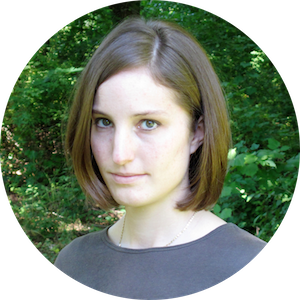

 About
I am machine learning researcher, working as a postdoc with Barbara Engelhardt and Brandon Stewart at Princeton. I finished my PhD in 2016 (dissertation); my advisor was David Blei.
I develop models for human-centered applications like recommendation systems and my inference algorithm of choice is stochastic variational inference, as it scales well to large data.
I am interested in what happens after model fitting, including posterior predictive checks, user studies, and visualization. These steps are important not only for evaluating and improving our models, but also for integrating them into live systems and making their results accessible.
I was born and raised in California, attended Swarthmore College, and then moved to the Bay Area to work at Pixar and Yorba, one year at each. Following that, I moved to New Jersey and worked as a research assistant while applying to graduate school. Mid-way through my graduate program, my advisor moved to Columbia, where I visted regularly. I stayed at Princeton after graduating in 2016 to work with Barbara and Brandon, who joined the university in 2014 and 2015, respectively.
I love basically all outdoor activities, including backpacking and gardening, but I also enjoy cooking, writing letters by hand, painting and drawing, needle crafts, and leisure reading.